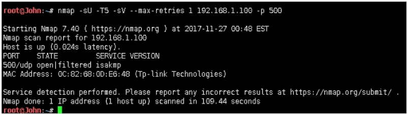
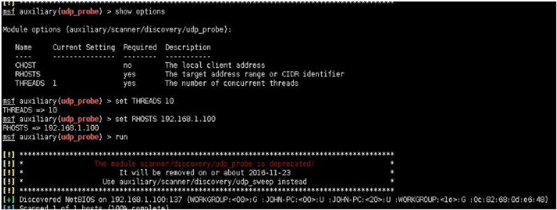
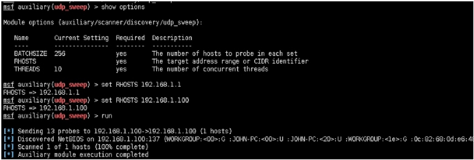
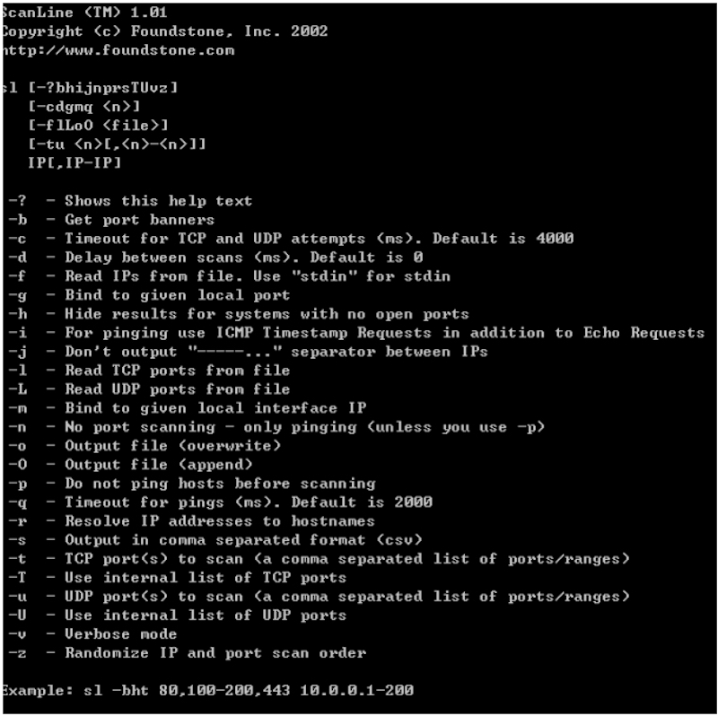
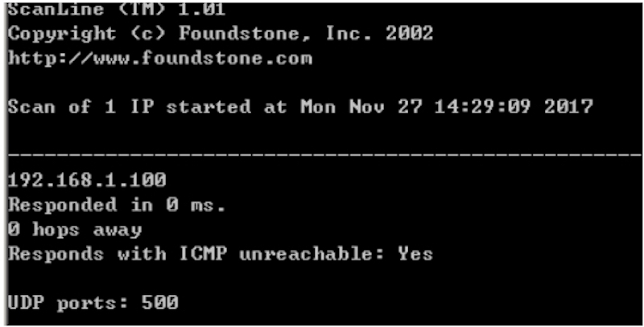

专注APT攻击与防御 https://micropoor.blogspot.com/
UDP简介： UDP（User Datagram Protocol）是一种无连接的协议，在第四层-传输层，处于IP协议的上一层。UDP有不提供数据包分组、组装和不能对数据包进行排序的缺点，也就是说，当报文发送之后，是无法得知其是否安全完整到达的。
UDP显著特性：
- UDP 缺乏可靠性。UDP 本身不提供确认，超时重传等机制。UDP 数据报可能在网络中被复制，被重新排序，也不保证每个数据报只到达一次。
- UDP 数据报是有长度的。每个 UDP 数据报都有长度，如果一个数据报正确地到达目的地，那么该数据报的长度将随数据一起传递给接收方。而 TCP 是一个字节流协议，没有任何（协议上的）记录边界。
- UDP 是无连接的。UDP 客户和服务器之前不必存在长期的关系。大多数的UDP实现中都选择忽略源站抑制差错，在网络拥塞时，目的端无法接收到大量的UDP数据报
- UDP 支持多播和广播。
1.nmap扫描
root@John:~# nmap -sU -T5 -sV --max-retries 1 192.168.1.100 -p 500
慢的令人发指

2.msf扫描
msf > use auxiliary/scanner/discovery/udp_probe

msf > use auxiliary/scanner/discovery/udp_sweep

3.unicornscan扫描
linux下使用推荐
root@John:~# unicornscan -mU 192.168.1.100
4.ScanLine扫描 项目地址：https://www.mcafee.com/ca/downloads/free-tools/scanline.aspx 网盘地址：http://pan.baidu.com/s/1i4A1wLR 密码：hvyx
McAfee出品，win下使用推荐。管理员执行。  
附录：
在线基于Nmap的udp扫描： https://pentest-tools.com/network-vulnerability-scanning/udp-port-scanner-online-nmap
Micropoor